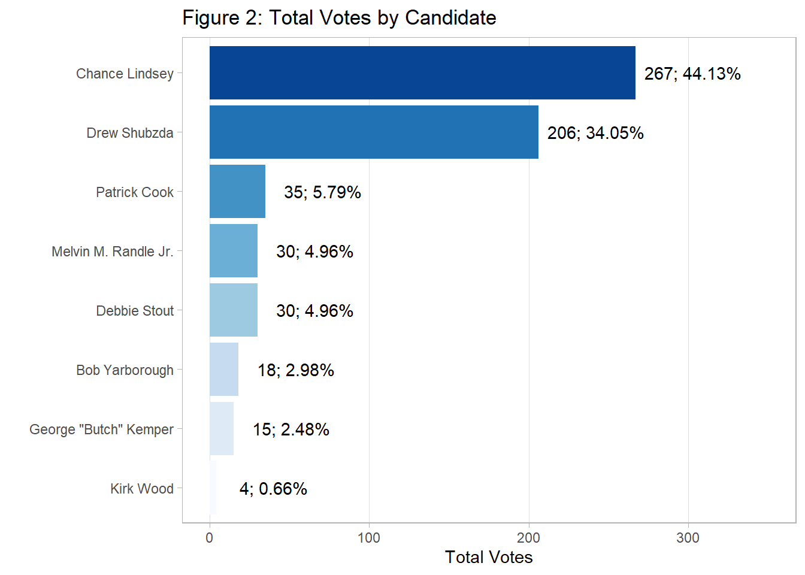
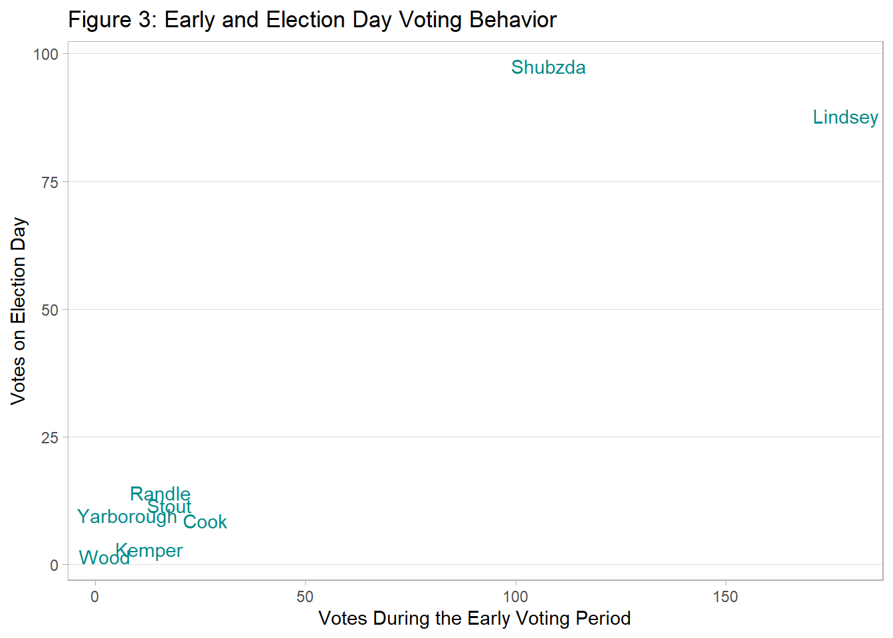

3 Graphing the Results
To easily visualize the poll rankings, we plot a bar chart of the total votes by candidate using ggplot2 functions, arranging the bars by total votes in descending order with the reorder() function. The graph places the candidates on the vertical axis so that their names are more easily readable than if they were on the other axis. Percentages are displayed so that readers may know the relative magnitude of the total votes.
3.0.1 R Code: Graphing the Total Votes by Candidate
ggplot(data) +
aes(x = reorder(candidate, votes_total),
y = votes_total,
fill = reorder(candidate, votes_total),
label = paste0(votes_total,'; ', votes_total_pct, '%')) +
geom_bar(stat = 'identity') +
geom_text(nudge_y = 36) +
scale_fill_brewer(palette = 'Blues') +
ylim(0, 350) +
coord_flip() +
labs(x = '',
y = 'Total Votes',
title = 'Figure 2: Total Votes by Candidate') +
theme_light() +
theme(panel.grid.minor = element_blank(),
panel.grid.major.y = element_blank(),
legend.position = 'none')
For the next graph, early voting numbers are plotted against Election Day votes to grasp their relationship more clearly. First, a function called theme_light2()–based on theme_light from ggplot2–is created in a way that emphasizes the data points by minimizing the number of non-data elements (e.g. background color).
3.0.2 R Code: Theme Function
theme_light2 <- function() {
theme_light() +
theme(panel.grid.minor = element_blank(),
panel.grid.major.x = element_blank(),
legend.position = 'none')
}To plot the names of the candidates more easily, we extract only their last names with a combination of gsub() from base R; str_split() from the stringr library within tidyverse; and map_chr() from the purrr package within tidyverse. A plot with text as the geometry is then plotted.
3.0.3 R Code: Graphing Early Voting and Election Day Votes
data$last_name <- data$candidate %>%
gsub(' Jr\\.', '', .) %>%
str_split(' ') %>%
map_chr(~ .x[length(.x)])
ggplot(data) +
aes(x = votes_early, y = votes_election_day, label = last_name) +
geom_text(col = 'cyan4', position = position_jitter()) +
labs(y = 'Votes on Election Day',
x = 'Votes During the Early Voting Period',
title = 'Figure 3: Early and Election Day Voting Behavior') +
theme_light2()